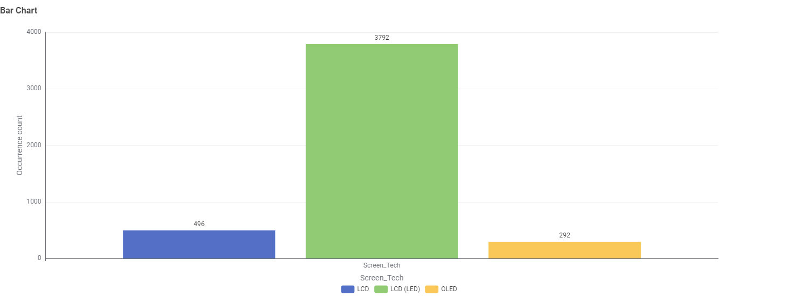
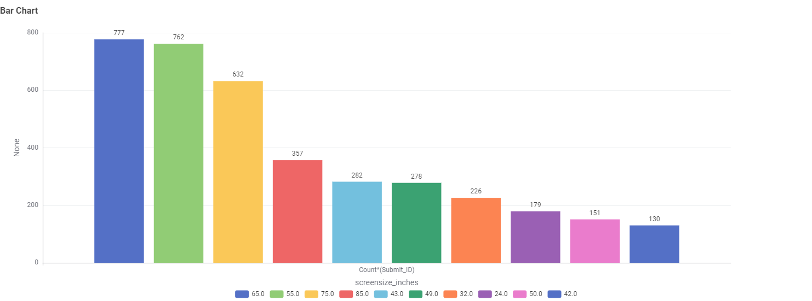
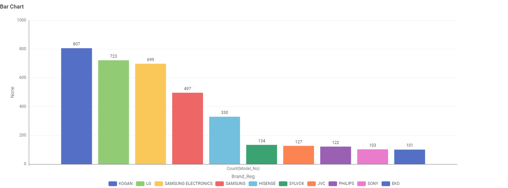
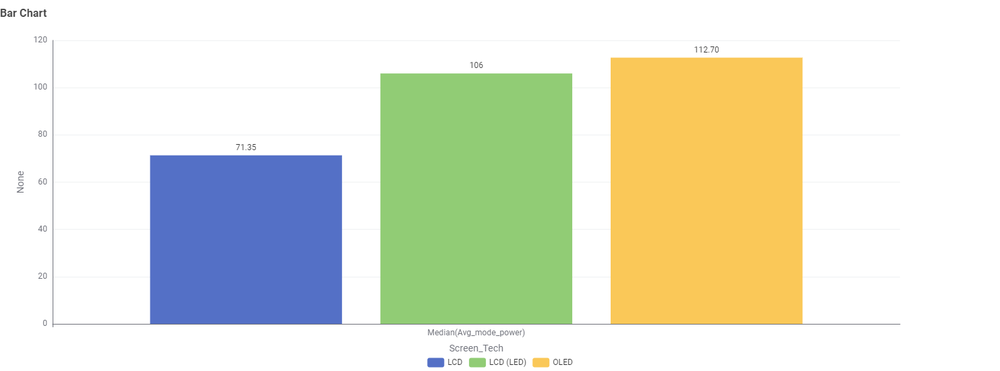
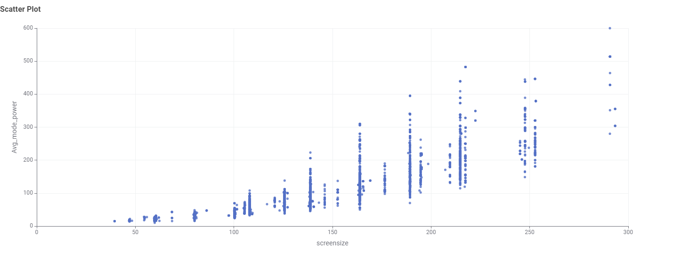
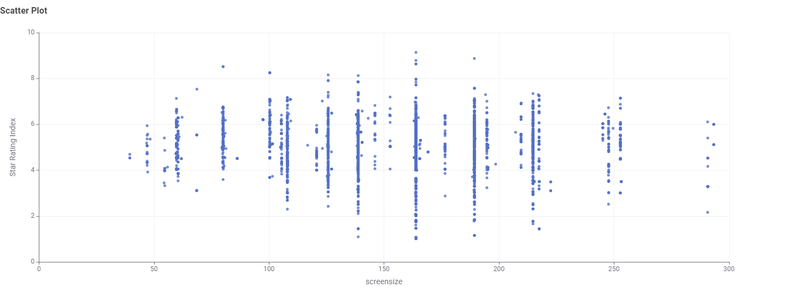

Televisions in Australia: What the Data Tells Us
If you're shopping for a new TV, the sheer number of options can be overwhelming. This data story is written for everyday consumers in Australia who want to understand what's actually on the market — and how to choose a TV that won't send their electricity bill through the roof. We used the Australian GEMS product database to answer four simple questions.
1. What screen technologies are available?

The Australian market is dominated by LCD (LED) televisions, which account for the vast majority of registered models (3,792 out of around 4,580). Older LCD and OLED screens are far less common. For consumers, this means that when you walk into a store, almost every TV you see will be an LED-backlit LCD — OLED remains a niche option.
2. What screen sizes are most common?

The most frequently registered screen sizes are 65 inches (777 models) and 55 inches (762 models), followed by 75 inches (632). Mid-sized screens such as 43 and 49 inches are still present, while smaller sizes like 24 and 32 inches are less common. This suggests that Australian households are increasingly opting for larger screens — which makes the next question even more important.
3. Which brands have the greatest number of different models?

When we count the number of registered models per brand, KOGAN leads with 807 models, followed closely by LG (723) and SAMSUNG ELECTRONICS (699). Note that "SAMSUNG" appears as a separate entry with 497 models — if the two Samsung entries were combined, the brand would actually rank first. After the top few brands, the number of models drops sharply, with brands like SYLVOX, JVC, PHILIPS, SONY and EKO each offering around 100 models. For consumers, this means the biggest choice is within a small number of brands, while many other brands offer only a narrow range.
4. Which screen technology uses the least power?

When we compare median power consumption, LCD screens use the least power on average (71.35), followed by LCD (LED) at 106, while OLED screens have the highest median consumption at 112.70. Interestingly, the most common technology on the market — LCD (LED) — is not the most efficient. If saving energy is your priority, an older LCD model may actually use less power, though it may lack the picture quality of newer screens.
5. Does a bigger screen always mean more power?

The scatter plot shows a clear upward trend: as screen size increases, average power consumption tends to rise. However, the relationship is not perfectly linear — at any given screen size, there is a wide spread of power values. For example, around 200 cm, some models use under 100 W while others use over 400 W. This means size matters, but it isn't the only factor. Two TVs of the same size can have very different power ratings depending on their technology and efficiency.
6. Is there a relationship between star rating and screen size?

The scatter plot shows no clear relationship between screen size and star rating. Small screens and large screens both show a wide spread of star ratings, mostly between 2 and 7. At almost every screen size, there are both highly rated and poorly rated models. This suggests that size alone does not determine energy efficiency — a large TV can still be highly rated, and a small TV is not automatically better. Consumers should check the star rating directly rather than assuming bigger screens are always less efficient.
What this means for you
- LCD (LED) is by far the most common technology on the Australian market.
- 65" and 55" are the most common screen sizes.
- KOGAN, LG and Samsung offer the widest range of models.
- Surprisingly, older LCD models have the lowest median power consumption, followed by LCD (LED) and OLED.
- Bigger screens tend to use more power, but there is huge variation between models of the same size.
- Star rating is not strongly linked to screen size — always check the rating label.
In short: size and technology both matter, but the biggest variation happens within each size category. Comparing energy ratings is more useful than relying on screen size or brand alone.